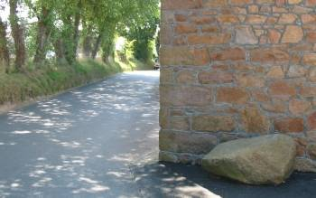

Y'a tchique temps, tchitch'un mé d'mandit, “Où'est qu'est la Pièrre du Mitan d'l'Île?”
“Oulle est dans la Rue des Sèrvais, à St. Jean,” qué j'rêponnis. “Ou touônn'nez à Sion, et pis en d'valant lé c'mîn un brîn, ou trouv'thez eune manniéthe dé pèrron dans la rue driéthe la carre d'eune maîson. V'là tch'est la Pièrre du Mitan d'l'Île.”

I' faut aver l'nez au mitan d'la fache, mais nou n'dithait dgéthe qu'chutte pièrre est géographiquement au mitan même dé Jèrri - mais quand nos anchêtres halîtent la pièrre d'la pouquelaye d'La Hougue Breune, i' n'avaient pon la cartchul'lie d'latitude ni d'londgitude qu'j'avons au jour d'aniet auve la pliaich'chie globale à satellite!
Au Mouoyen Âge, les mouaines dans lus monastéthes faîthaient des cartes tchi mouontraient Jérusalem au mitan d'l'Unnivèrs, et les Romains app'laient l's ieaux à l'entou d'ieux la mé au mitan d'la Tèrre - la Méditerrannée. Pouor les vièrs Chinnouais, la Chinne avait nom l'Rouoyaume du Mitan.
Les cheins tchi veulent vîsiter la pièrre du mitan d'l'Ûrope daivent viagi en Lithuanie. Dans un par à la campangne, i' trouv'thont eune pièrre pliaichie à seule fîn d'mèrtchi la taque cartchulée par des géographes Français en 1989.
En Dgèrnésy, y'a eune pliaque en méta, à ch'qu'i' pathaît, pouor mèrtchi l'mitan d'l'île, mais i' sembl'ye qué s'nou veurt vîsiter l'mitan du Rouoyaume Unni, i' faut aller à eune boête à téléphone, tch'a eune pliaque sus, à Dunsop Bridge dans l'Lancashire.
Et né v'là les deux buts et l'mitan!
Geraint Jennings
Viyiz étout: